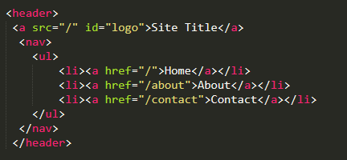
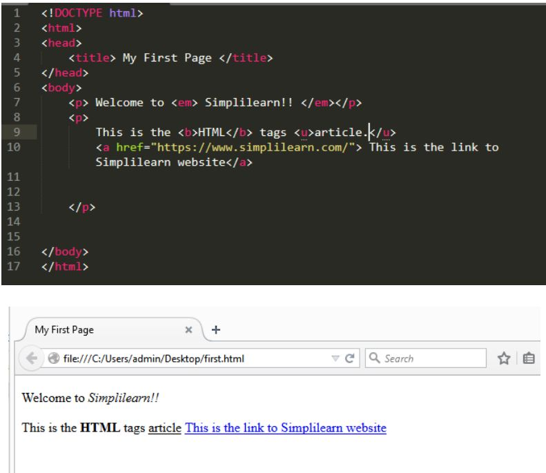

- !DOCTYPE html
Indica al navegador que el documento está basado en el estándar HTML5.
- html /html
Representa la raíz de un documento HTML. Todos los demás elementos de la estructura HTML deben ser recogidos dentro de estas etiquetas.
- p /p
Etiqueta usada para escribir párrafos de texto.
- body /body
Al contrario que la etiqueta de metadatos head, todo lo que quieras mostrar en la página web debe ir recogido dentro de las etiquetas de apertura y cierre de body. Este contenido será el que se muestre en la web.
- head /head
Representa una colección de metadatos acerca del documento, incluyendo enlaces a, o definiciones de, scripts y hojas de estilo. El resto de etiquetas de metadatos, irán recogidas dentro de las etiquetas de apertura y cierre del head. Importante explicar que estos metadatos del documento, es información para el navegador y no contenido que será visible en la página web. A excepción de la etiqueta title que veremos a continuación.
- title /title
Etiqueta usada para definir el título de la página web.
Ejemplos de estas etiquetas:

- ol /ol
Etiquetas para crear una lista ordenada
- ul /ul
Etiquetas para crear una lista des-ordenada
- li /li
Etiquetas que recogen el contenido de un elemento de una lista, sea ordenada o no.
Ejemplos de estas etiquetas:
- dl /dl
Usada para crear una lista de definiciones.
- dt /dt
Representa un término definido por la siguiente etiqueta dd
- dd /dd
Se usa para definir los términos listados antes que él.
Ejemplos de estas etiquetas:
- div /div
Etiqueta común utilizada para crear un contenedor genérico.
Ejemplo de esta etiqueta:
- h1,h2,h3,h4,h5,h6
Son etiquetas HTML muy importantes, ya que son usadas para jerarquizar el contenido de la web. Las etiquetas se usan para explicar brevemente el contenido que irá a continuación.
Ejemplo de esta etiqueta:
- nav /nav
Usadas para definir el contenido que será la sección de navegación de la web.
- a /a
Etiqueta utilizada para crear hiperenlaces en el documento HTML.
Ejemplo de estas etiquetas:

- img
Etiqueta para «pintar» una imagen en la página web.
- center /center
Se utiliza para centro de alinear el texto.
Ejemplo de estas etiquetas:
- u /u
Usada para definir texto estilísticamente diferente del texto normal o nombres propios en otros idiomas.
- em
Es apropiado para marcar con énfasis las partes importantes de un texto.
Ejemplo de estas etiquetas:

- style /style
Etiquetas usadas para introducir código CSS en línea, es decir, en el propio documento HTML.
- table /table
Etiquetas de apertura y cierre de una tabla. El resto de etiquetas de la tabla han de ir siempre recogidas entre estas dos etiquetas.
- td /td
Usada para definir una celda de una tabla.
- th /th
Etiqueta que se usa para definir el encabezado de una celda.
- thead /thead
Indica el bloque de filas que describen las etiquetas de las columnas de la tabla.
Ejemplo de estas etiquetas:


- hr
Etiqueta utilizada para «romper» entre dos secciones de una web. Usada comúnmente como separador.
- strong /strong
Etiqueta para definir una palabra o conjunto de ellas como importantes. Tiene una fuerte importancia en el SEO de la página.
- sub /sub y sup /sup
Etiquetas utilizadas para representar un subíndice o superíndice.
- big /big
Muestra el texto marcado con un tamaño de fuente más grande.
Ejemplo de estas etiquetas:
- link
Se usa para enlazar recursos externos al documento HTML. El ejemplo más común son las hojas de estilos CSS.
- meta
Etiqueta usada para definir otros metadatos que no se pueden definir con una etiqueta HTML especifica. Por ejemplo para definir el autor del sitio, o la descripción del mismo.
- script
Es usado para insertar códigos de scripts del lado cliente en un documento. Esto puede ser logrado de dos formas: insertando el código directamente como contenido de este elemento o refiriéndose a un archivo externo a través del atributo "src", que contenga el código del script.
Ejemplo de estas etiquetas:
- video /video
Se usa para reproducir video en la página web junto a sus archivos de audio y capciones asociadas.
- source
Permite a autores especificar recursos multimedia alternativos para las etiquetas de video o audio.
- track
Se utiliza como elemento hijo de los elementos multimedia, audio y video. Le permite especificar pistas de texto cronometradas (o datos basados en el tiempo), por ejemplo, para manejar subtítulos automáticamente.
Ejemplo de estas etiquetas:
- map
Es una etiqueta de contenedor que indica el comienzo y el final de la descripción del mapa de imagen.
Ejemplo de estas etiquetas:
- figure /figure
Indica una figura ilustrada como parte del documento HTML5.
- figcaption /figcaption
Utilizada para definir la leyenda de una figura.
- main /main
Se usa para definir el contenido principal del documento. Solamente puede existir uno por documento.
- section /section
Define una sección del documento
- article /article
Define contenido independiente de la web.
- aside /aside
Dentro de estas etiquetas suele alojarse el contenido adicional de la web. Suele ser contenido relacionado con la web pero de poca importancia
- header /header
Se usan para definir la cabecera la página web. Suele contener el logotipo, menú de navegación, etc.
- footer /footer
Usadas para definir el pie de página.
- small /small
Utilizada para dejar un comentario aparte, del tipo una nota de derechos de autoría, u otros textos que no son esenciales para la comprensión del documento.
- cite /cite
Para indicar el título de una obra
- mark /mark
Usada para resaltar texto
- span /span
Etiqueta HTML sin ningún significado específico. Se usa conjuntamente con los atributos «class» o «id» para atribuirle ciertas características.
- br
Etiqueta utilizada para crear un salto de línea
- iframe /iframe
Es una etiqueta que sirve para anidar otro documento HTML dentro del documento principal.
- object /object
Utilizada llamar a un recurso externo de la web. Este recurso será tratado como una imagen, o un recurso externo para ser procesado por un plugin.
- audio /audio
Usada para cargar en una web un archivo de audio o stream de audio.
- svg /svg
Se usa para llamar a una imagen vectorizada.
- caption /caption
Usada para indicar el título de la tabla.
- colgroup /colgroup
Etiqueta utilizada para agrupar dos o más columnas de una tabla.
- tbody /tbody
Usada para describir los datos concretos de una tabla.
- tfoot /tfoot
Indica los bloques de filas que describen los resúmenes, o datos totales de una columna de una tabla.
- tr /tr
Se usa para indicar una fila de celdas de una tabla.
- form /form
Etiqueta de apertura y cierre de un formulario de una página web. El resto de etiquetas de formulario deben ir siempre recogidas entre estas etiquetas de apertura y cierre de formulario.
- fieldset /fieldset
Etiqueta que representa un conjunto o agrupación de elementos de un formulario. «Pinta» un recuadro alrededor de las etiquetas que estén contenidas dentro del fieldset
- legend /legend
Etiqueta ligada a fieldset. Indica el título del fieldset
- label /label
Se usa para definir el nombre o título de un control del formulario.
- input
Pinta un campo de introducción de datos para el usuario. Es de las principales etiquetas de un formulario.
- button /button
Etiqueta utilizada para representar un botón en el formulario.
- select /select
Input que permite una selección entre un conjunto de opciones.
- option /option
Etiqueta ligada a select. Permite añadir diferentes opciones al select
- textarea /textarea
Añade un campo al usuario para que pueda introducir texto en unas líneas máximas de texto que el desarrollador puede definir.
- abbr
(o Elemento de Abreviación HTML) representa una abreviación o acrónimo.
- !--...--
Utilizado para agregar comentarios.
- bdi
Es la abreviatura de aislamiento bidireccional, aísla una parte del texto que puede formatearse en una dirección
- bdo
Permite a los autores anular el algoritmo bidireccional para fragmentos específicos de texto.
- code
Inserta texto que representa código de computadora. Puede ser útil para mostrar funciones, código de programación o variables.
- del
Marca las partes de un texto o documento que han sido suprimidas o sustituidas.
- dfn
Sirve para marcar el término que se quiere definir.
- i
Es un espacio de texto que representa un cambio en el estado de ánimo o la calidad del texto.
- ins
Marca las partes de un texto que han sido añadidos al documento. Sus etiquetas son: ins e /ins (ambas obligatorias).
- kbd
Contiene texto que corresponde a una entrada del teclado.
- mark
Representa un texto marcado o resaltado como referencia o anotación, debido a su relevancia o importancia en un contexto particular.
- meter
Indicar una medida dentro de un rango; es decir debe ser acotada, tener un inicio y un fin.
- pre
Representa texto preformateado.
- progress
Se utiliza para mostrar el progreso de una tarea, ya sea en forma de barra de progreso o de un porcentaje.
- q
Indica que el texto adjunto es una cita corta en línea.
- s
Muestra el texto tachado con una linea horizontal. - samp
Se utiliza para incluir texto en línea que representa una muestra (o cita) de la salida de un programa de ordenador.
- template
Es un mecanismo para mantener el contenido HTML del lado del cliente que no se renderiza cuando se carga una página.
- time
Representa un periodo específico en el tiempo.
- u
Se utiliza para definir texto subrayado.
- var
Contiene texto que supone ser la instancia de una variable o el argumento de un programa.
- wbr
Representa una posición dentro del texto donde el explorador puede opcionalmente saltar una línea.
- data
Vincula un contenido dado con una traducción legible por una máquina.
- datalist
Contiene un conjunto de elementos option que representan los valores disponibles para otros controles.
- details
Es usado como un widget de revelación a través del cual el usuario puede obtener información adicional .
- dialog
Representa una caja de diálogo u otro componente interactivo, como inspector o ventana.
- dir
Era usado para crear directorios en multicolumna.
- output
Es usado para mostrar resultados de cálculos dentro de un formulario.
- optgroup
Permite a los autores agrupar opciones (elemento HTML option) en una lista de opciones (elemento HTML select). Un título es usualmente mostrado encima de las opciones contenidas por este elemento.
- noscript
Es usado para proveer contenido alternativo para ser mostrado cuando un script no es ejecutado.
- rp
Esta etiqueta define lo que muestra si un navegador no soporte anotaciones ruby.
- rt
Es parte del conjunto de etiquetas “ruby” (ruby annotation) que se utilizan para proporcionar anotaciones (generalmente en forma de símbolos fonéticos o glosas) para caracteres específicos en un texto.
- ruby
Es una de las menos conocidas y utilizadas sobre todo en Occidente. Esto se debe a que se utiliza sobre todo en idiomas asiáticos. La utilidad de la etiqueta ruby es la de mostrar anotaciones sobre la pronunciación de un texto o palabra.
- s
Representa contenido que ya no es relevante o preciso. Este elemento puede ser útil cuando el autor necesita hacer evidente un cambio en los precios, la disponibilidad, las políticas, etc. (Desestimado en HTML5)
- acronym
Define a su contenido como un acrónimo, y es comúnmente utilizado junto con el atributo "title" para expandir/explicar al acrónimo.